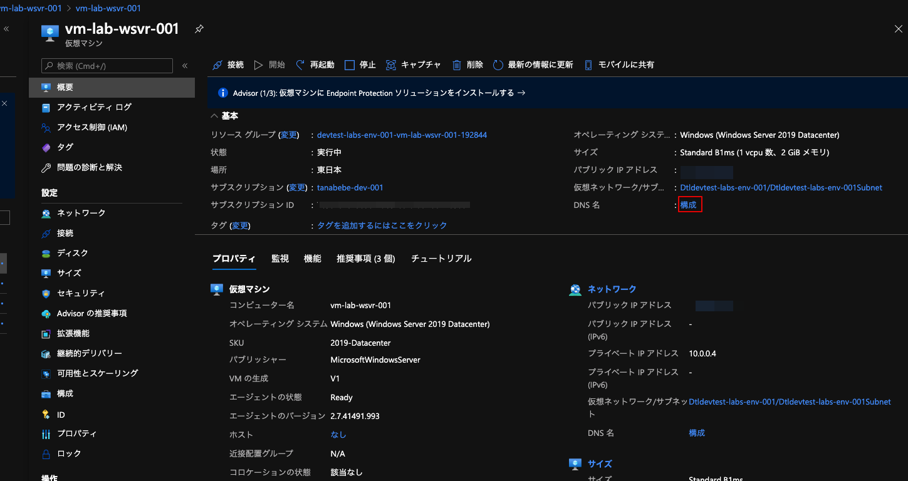
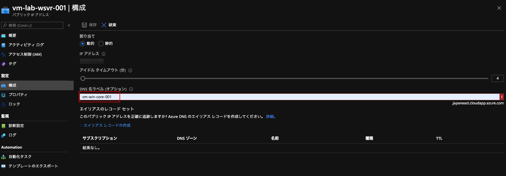

Azure PortalからVirtual Machinesで作成したVMを選択し，DNS名の構成をクリック．

Visual Studioから発行するときにDNSでアクセス出来ないと駄目なので，任意のDNS名を付けましょう．作成したVMのマシン名がわかりやすくて良いと思います．変更したら保存をクリックします．割り当ては動的としていますが，VMが再起動してもDNSで紐付くので問題ないです．
